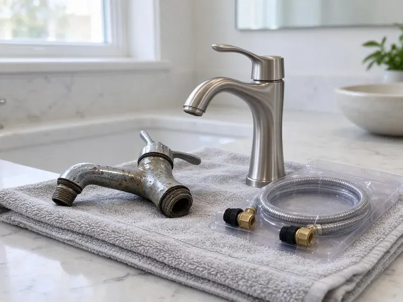

Well Pump Replacement in Essex Junction, VT
We replace failed well pumps across Essex Junction, VT with quality submersible pumps sized to your well depth and household demand.
- Fast Well Pump Service
- Well Depth and Yield Testing
- Guaranteed Work
- Upfront Pricing
Need a Well Pump Replacement? Get a Free Quote in Essex Junction, VT.
We carry common pump sizes and controls, so most jobs wrap up in one day.
Expert Well Pump Replacement Services in Essex Junction, VT
CKV Plumbing diagnoses well problems thoroughly before replacing equipment. We test the pressure switch, control box, wiring and tank so we know the pump is the real cause.
Our expertise includes:
- Submersible and Jet Pump Expertise
- Pressure Tank and Switch Integration
- Control box, capacitor and pressure switch replacement

Additional Plumbing Replacement Services in Essex Junction, VT
When repairs are no longer enough, our replacement services in Essex Junction, VT deliver modern, efficient equipment installed right.


Customers
Why Choose CKV Plumbing for Well Pump Replacement in Essex Junction, VT?
Hard water, sediment and falling water tables can all stress well pumps. We consider these factors when selecting a replacement.
- Quality Pumps, We install only dependable, high-efficiency well pumps designed to provide years of trouble-free service for your home.
- Expert Installation, Our licensed plumbers have broad experience with well systems, for a correct and durable installation every time.
- Reliable Water, CKV Plumbing makes sure your new well pump provides steady water pressure and flow for all your household needs.
Citywide Coverage
CKV Plumbing proudly serves every neighborhood and surrounding community in Essex Junction, with fast response times for well pump replacement. We understand that well pump failures are urgent, which is why our local teams are always ready to assist.
Experienced Team
Each technician at CKV Plumbing undergoes ongoing training on the latest well pump technologies and installation methods. That expertise means a professional and durable well pump replacement every time for Vermont homes.
Safety-First Approach
From proper electrical connections to correct pressure tank sizing, we make sure every part of your well pump replacement meets high safety standards. Our careful approach protects your home and provides peace of mind.
Trusted Certified Essex Junction Plumbing Services Professionals
At CKV Plumbing, we take pride in providing certified plumbing services throughout Essex Junction, VT. Backed by leading industry credentials, our experienced plumbers combine technical skill with genuine customer care. Whether it is repair, installation, or maintenance, we follow strict safety and quality standards to deliver lasting results you can trust.
Call Us Now PHCC Plumbing Contractor Recognition
PHCC Plumbing Contractor Recognition Better Business Bureau (BBB) Accreditation
Better Business Bureau (BBB) Accreditation Angi Certified Pro
Angi Certified Pro ISO 9001 Quality Management Certification
ISO 9001 Quality Management CertificationReliable Well Pump Replacement Services in Essex Junction, VT
Jet Pump Replacement in Essex Junction, VT
Jet pumps are typically used for shallower wells and are located above ground, drawing water up through a suction pipe. Common issues include motor failure, impeller damage or pressure switch malfunctions. CKV Plumbing provides professional jet pump replacement with correct sizing and pressure tank integration. We make sure your new jet pump delivers steady water pressure throughout your Essex Junction, VT property.

Cost-Effective Well Pump Solutions in Essex Junction, VT
While well pump replacement is a significant investment, we strive to provide cost-effective solutions without cutting corners on quality. We offer transparent pricing and discuss pump options and their long-term benefits. That helps you make an informed decision that fits your budget and provides reliable water for years to come in Essex Junction, VT.
Well Pump Brands We Service in Essex Junction, VT
We work with leading well pump manufacturers known for their durability and performance, including Grundfos, Franklin Electric, Goulds Pumps and Zoeller. Our experience with these brands means your replacement pump is a quality, reliable unit. We can also provide alternatives and upgrades to suit your needs and budget in Essex Junction, VT.
Constant Pressure Well Pump Installation in Essex Junction, VT
For homeowners seeking consistent water pressure regardless of demand, constant pressure well pump systems are an excellent upgrade. These systems use variable speed drives to match pump output to your usage, eliminating pressure swings. We regularly install these advanced systems, providing a more comfortable and efficient water experience in Essex Junction, VT.
Well Pressure Tank Replacement in Essex Junction
While not the pump itself, a failing pressure tank can mimic well pump issues, causing short cycling or inconsistent pressure. Often, when a well pump is replaced, the pressure tank is also nearing the end of its life. CKV Plumbing can replace your well pressure tank alongside your pump. That sets up your entire well water system for longevity and efficiency for homeowners in Essex Junction.
Solar Well Pump Systems in Essex Junction, VT
Remote properties and livestock wells often benefit from solar-powered pumps. Solar can be a practical option wherever a site gets steady sun. We install solar pump systems with controllers and storage tanks. These systems lower energy costs and work off-grid. We size panels and pumps to your water needs.
Control Box and Pressure Switch Replacement in Essex Junction, VT
Not every well failure means a bad pump. Failed capacitors, relays or pressure switches can stop the system. We test these components first and replace them if needed. This can save you the cost of a pump pull. We explain what we find before making any recommendations.

Well Pump Diagnosis and Sizing in Essex Junction
Accurate diagnosis is essential to effective well pump replacement. We do not just replace a pump, we assess your entire well system, including the well depth, yield and your household's water demand. This allows us correctly size your new pump, preventing premature failure and keeping enough water flowing to your home in Essex Junction.
Well Pump Replacement Near Me in Essex Junction, VT
When you search for well pump replacement near me in Essex Junction, VT, CKV Plumbing is your reliable local choice. We have a strong presence in the community, and our technicians are often just a short drive away, ready to address your well pump issues promptly. Our local knowledge means we understand the challenges wells can face in the area.
Do not wait for your water supply to completely dry up. For fast and professional well pump replacement near me, contact CKV Plumbing. We are known for quick dispatch and efficient service to homes and businesses throughout Essex Junction, minimizing your downtime and restoring your comfort.
CKV Plumbing at a Glance
- Licensed and insured plumbers serving Essex Junction, VT
- 24/7 emergency service with same-day scheduling
- Upfront, flat-rate pricing before work begins
- 4.8-star rated by 553+ Vermont customers
Essex Junction Map
Essex Junction Information
- Population
- 10,817
- Area codes
- Local
- Service area
- Essex Junction and communities within 40 miles
- Nearby
- Winooski, South Burlington, Burlington, Shelburne
For homes in Essex Junction, VT, a dependable well pump is essential, especially given local geology and water table changes that affect well performance and pump requirements.
Expert Services
Trust our professionals for reliable CKV Plumbing solutions in Essex Junction, VT.
Our Specialized Plumbing Services in Essex Junction, VT
At CKV Plumbing, we provide a complete range of plumbing services across Essex Junction, VT. From leak detection to full system installations, our team ensures fast, precise, and affordable service for both residential and commercial properties. Explore our core services below:


How Our Well Pump Replacement Process Works in Essex Junction, VT
Our well pump replacement process is designed for efficiency and transparency, so you understand every step.
Request a Quote
Contact CKV Plumbing at (802) 209-5139 to schedule an inspection and receive a detailed quote for your well pump replacement. We will gather the information we need and set up a good time for our technicians to visit.
System Assessment
Our expert plumbers will thoroughly assess your current well pump system, identify the cause of failure and determine the most fitting replacement pump for your well and household needs.
Professional Installation
We carefully remove the old pump and install the new unit, making sure all electrical connections, piping and pressure tank settings are correctly configured according to manufacturer specifications and local codes.
Frequently Asked Questions About Well Pump Replacement in Essex Junction
The cost of well pump replacement in Essex Junction, VT usually ranges from $1,500 to $3,500, though it can vary. Factors affecting the price include the type of pump, well depth, horsepower and any additional components needed like pressure tanks or wiring upgrades. We provide a detailed, upfront quote after a thorough assessment.
Common signs include no water from your faucets, weak or inconsistent water pressure, strange noises from the well or pressure tank area, short cycling where the pump turns on and off frequently, or cloudy or muddy water. If you notice any of these, it is time to call a professional for an inspection.
The lifespan of a well pump varies greatly depending on usage, water quality and pump type, but most last between 10 and 20 years. Regular maintenance and proper sizing can extend its life, but eventually wear and tear will call for replacement.
Yes, we often replace well pressure tanks alongside well pumps or as a standalone service. A properly working pressure tank is crucial for pump longevity and consistent water pressure. We assess your entire well system so all components work together efficiently.
If your pressure tank is old or waterlogged, replacing it at the same time can protect the new pump. A failed tank causes rapid short cycling, which is one of the most common reasons submersible motors burn out early.
In many areas, a plumbing or well permit is required for well pump replacement to confirm compliance with local building and health codes. CKV Plumbing handles all required permitting on your behalf, so your installation is fully compliant and safe.
Most new well pumps come with a manufacturer's warranty, usually ranging from 1 to 5 years, covering defects in materials and workmanship. CKV Plumbing also backs our installation work with our own labor warranty for complete peace of mind.
We install Grundfos, Goulds and Franklin Electric pumps. These brands are reliable and widely supported.
What People Are Saying About Our Plumbing Experts?

Emily R.
I called CKV Plumbing for plumbing repair, and the technician was fast, polite, and thorough. They explained the problem clearly and fixed it the same day. I will definitely hire them again. Highly recommended!
Plumbing Repair · Burlington, VT
James P.
Our commercial plumbing system had a leak under the sink, and CKV Plumbing handled it professionally. The plumbers arrived quickly and restored everything without disruption to our customers.
Commercial Plumbing · Burlington, VT
Daniel K.
A pipe burst at 11 pm and they actually answered. The plumber showed up within the hour, shut everything down, and had us back to normal the next morning. Could not ask for more.
Emergency Plumbing · St. Albans, VT
Laura S.
I scheduled a water heater replacement, and the team made the process smooth and affordable. The new unit works perfectly, and they cleaned up after completing the job.
Water Heater Replacement · Shelburne, VTRobert G.
The trenchless sewer replacement saved our front yard. They walked us through the camera inspection footage first so we knew exactly what we were paying for.
Sewer Line Replacement · St. Albans, VT
Mark T.
When our office needed drain cleaning, CKV Plumbing provided quick, reliable service. The plumber arrived on time and made sure every drain flowed perfectly before leaving. Very satisfied.
Drain Cleaning · St. Albans, VT